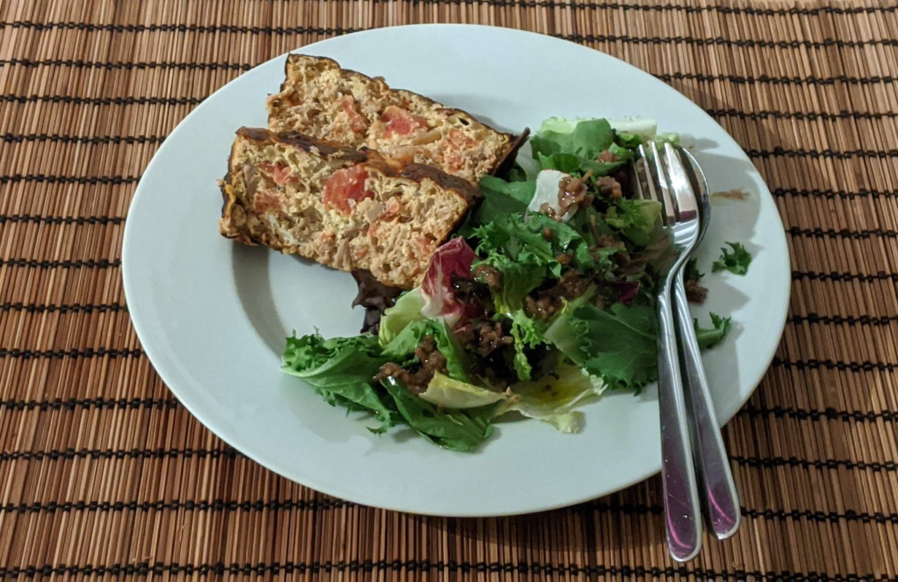

Flan de thon provençal

Pour 4 personnes :
- Une grosse boîte de thon au naturel
- ~400g de tomates pelées
- 5 œufs
- 2 oignons
- Une gousse d'ail
- Une cuillère à soupe d'origan
- Huile d'olive, poivre, sel
- Préchauffer le four à 240°C (thermostat 8)
- Peler les oignons, les hacher finement, peler et écraser la gousse d'ail, et faire revenir tout ça dans une poêle.
- Pendant ce temps, couper grossièrement les tomates, et lorsque les oignons sont fondus, ajouter les tomates et leur jus dans la poêle, avec l'origan.
- Laisser cuire dix minutes en remuant de temps en temps, et pendant ce temps, égoutter et émietter le thon.
- Battre les œufs en omelette dans un saladier, et tout rajouter dedans en mélangeant bien.
- Verser ça dans un plat à four beurré, enfourner 35 minutes. Servir tiède ou froid.
Retour à la liste des recettes